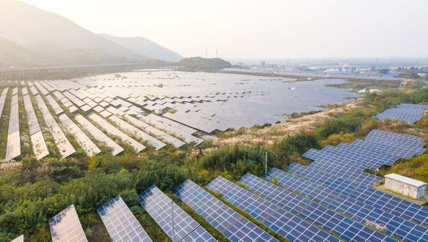

Tom McQuillen is an Australian VC fighting to stop the effects of climate change. He currently works at Regen, a venture capital firm which invests in early-stage climate-tech start-ups. Regen's investing sweet-spot is at the seed stage and the team aims to invest a billion dollars this decade into the next generation of innovative climate companies.
In this edited conversation with Peter Green, Tom spoke about his journey into VC, growth trends in various climate-tech areas and gave some advice for folks starting out on their climate journey.
What's the mission at Regen?
Regen is an early-stage venture capital firm which backs climate-tech founders. Our mission is to find transformative solutions for really big climate problems. We believe climate solutions can come from anywhere. As a result, we are a very globally focussed VC fund with offices in Australia and the US.

How did you personally get involved at Regen?
I first met Regen's founder, Dan, five years ago while I was working at a start-up called Yume, a food waste marketplace here in Australia.
We stayed in touch while I moved to study at The University of Oxford in the UK. It was there that I ran an organisation called the Oxford Seed Fund. This is a student led VC fund which invests in early-stage start-ups at the pre-seed stage.
After that, I reached out once more to Dan to get his thoughts on VC investing and running a fund. During that call he told me about his plans for Regen. When he spoke about his ambition and the goal to move a billion dollars of capital into catalytic climate start-ups over the next 10 years, I didn't want to talk about anything else. I wanted to get involved so I decided to do a summer internship with Regen and finish my degree at Oxford.
I then decided to move back to Australia to join Dan and the Regen team full-time. It's been an amazing experience and I feel very fortunate.

What important lessons have you learned so far from your time at Regen?
There are a couple of hypotheses we made a while ago that we've been able to validate recently. Firstly, there's been a global flow of talent moving into the climate space. We thought that mission driven founders with a climate idea would have a really unfair advantage in attracting and retaining top tier talent.
We've seen that play out over and over and in ever-increasing volume. For example, we've been speaking to founders who have left the likes of Google, Facebook, Airbnb, SpaceX and Tesla to work on climate because it's the biggest problem of our generation.
The other hypothesis we made relates to our global focus. A lot of the solutions we back are global from day one. If we were geographically restricted to one area, we'd probably only see part of the picture. When you're looking at a niche like soil carbon for example, a relatively nascent field, being able to compare the top five or ten solutions across the globe before investing is a massive advantage. Otherwise you'd just be picking the one solution that happens to be in the area that you're domiciled in.
One of the results of COVID is that everyone is more comfortable meeting, doing business, and even making investments online. So I think we've been fortunate in our timing there.
Which areas of climate-tech have seen the most forward momentum in your opinion?
It's hard to narrow the focus on one area because there are a lot of really cool companies being formed. At the moment at Regen we're exploring the nature-based solutions value chain. Net zero doesn't mean zero emissions, it means as low emissions as possible, and then some carbon removal to get us below zero. As a result, the options for carbon removal are either made up of nature-based solutions, or industrial solutions.
Personally I think we will need both, but it feels like nature-based solutions are a little bit more scalable at the moment. Whether we're talking forestry, blue carbon from the ocean, or soil carbon there are some really interesting options to harness nature and restore the way ecosystems act as carbon sinks. On that front, there are plenty of problems to solve across the value chain. We need marketplaces, validation, measurement techniques, and ways to support project developers and landowners. We're seeing a lot of interesting innovation there trying to unlock and scale that market as quickly as possible.

Another interesting area relates to alternative production methods. Everyone's familiar with the alternative protein space but, aside from meat, there are products including chocolate, coffee, palm oil, cotton and textiles which all need to be produced more sustainably.
There's a huge amount of momentum in the alternative production space which is super exciting.
Now another trend that we're seeing lies at the intersection between fintech and climate. There are some huge megatrends that have been happening outside the climate world such as retail investors democratising access to equity markets. There's a lot of momentum and demand for retail investors to access asset classes that they've previously found difficult to invest in. This includes the democratisation of access to renewable energy infrastructure, land ownership, and agriculture.
There is also a lot of consumer demand to move assets out of unsustainable areas. For example, people are starting Neobanks for consumers who don't want their savings funding new coal projects for example. It’s exciting because there's a huge amount of retail investment that could be going to better use, and there's also the need for us to scale really proven solutions like solar and wind which require plenty of capital.
What’s next for you guys at Regen VC?
We're continuing to build the Regen firm. We’re looking at a bunch of interesting investments at the moment and hoping to publish some of our sub-sector theses. We're also hiring for a couple of roles and are very fortunate to be able to support some amazing founders in reaching their next milestones.
What advice might you give to your younger self or someone just starting out on this path?
I think it's a great time to get involved in climate-tech both from an impact perspective, but also from a financial perspective. The next 10 years on a geological timescale is a millisecond but is a critical inflection period in the history of our planet's climate. The IPCC report confirms that and shows that there's a huge need for decarbonisation. There's also such massive momentum from both government and business to get there that it’s going to create trillions of dollars of opportunities. So for anyone who's thinking about starting a business, I couldn't think of a better space to build something.
What books might you recommend to someone who's trying to build ventures in this space?
"Drawdown" is always worth mentioning. Otherwise there's a book called "2040" which is a really positive and optimistic look at what our life could look like in 2040 if we make some of these changes. The idea is not just to avoid climate catastrophe but also to create a better way of living as we approach better production systems.
From the start-up side, I really like "The Hard Thing About Hard Things" by Ben Horowitz, which is a great eye opener for anyone moving into this space so they know what they're getting into.
Finally I'd recommend some great fiction books as well like "Ishmael", and "The Monkey Wrench Gang."
Interviewer: Peter Green